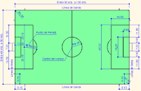

Los partidos de fútbol se dividen en dos tiempos, cada uno de 45 minutos, con un descanso de 15.
El árbitro lanza una moneda para decidir el lado de la cancha jugarán.
El balón está dentro del juego mientras no haya falta. La pelota está fuera de cancha si cruza la meta o la línea de banda.
Se marcará gol cuando el balón pasa la línea de meta y entra al arco, siempre y cuando no haya falta.
Se considera fuera de juego (offside) si un jugador le da pase a su compañero y éste está más cerca a la línea de meta opuesta en comparación al balón y al último adversario. En este caso, el árbitro otorgará al rival un tiro libre indirecto (pase a otro jugador).
Tocar el balón; saltar sobre el adversario, empujarlo, golpearlo, sujetarlo, patearlo o escupirlo; son consideradas faltas y son cobradas con tiro libre a favor del equipo afectado.
El árbitro muestra tarjeta amarilla para amonestar a un jugador (por infringir el reglamento) y una tarjeta roja para expulsarlo (por conducta violenta contra el adversario o impedir un gol con la mano).
El tiro libre reanuda el juego después de una falta. Existen dos tipos:
Tiro libre directo: lanzamiento directo a la portería del equipo contrario.
Tiro libre indirecto: un pase a otro jugador.
Los penales se marcan cuando un jugador comete una infracción dentro del área que defiende y se cobra en favor del equipo contrario.
Los saques reanudan el juego desde distintas partes de la cancha, por ello existen tres, con los nombres de donde se realiza:
saque de banda
saque de meta o saque de puerta
saque de esquina o saque de corner
El campo es rectangular y tendrá entre 90 a 120 metros de longitud y 45 a 90 metros de ancho. Está dividido en dos partes y marcado por líneas que definen:
Los colores del equipamiento de los jugadores debe de ser diferenciado del equipo contrario. La vestimenta del árbitro y asistentes debe de ser distinta al de ambos equipos.
Existen dos árbitros asistentes del árbitro principal, quienes cumplen las funciones de indicar:
Antes de iniciar el partido, en medio del campo se reúnen el árbitro y los capitanes de cada equipo para elegir qué parte del campo les tocará. Esta elección es echada a la suerte usando una moneda. El ganador podrá escoger. En el segundo tiempo intercambiarán de lado.
Se marcará gol cuando la pelota atraviese por completo la línea de meta e ingrese al arco conformado por dos postes y un travesaño), mientras que no haya falta previa en el equipo anotador.
Se considera fuera de juego al darse tres condiciones al mismo tiempo y estas son cuando un jugador le da pase a su compañero y este compañero está:
Se cobra con tiro libre directo a favor del rival desde donde se produjo el fuera de juego.
Se concede tiro libre directo (lanzamiento directo a la portería del equipo) al equipo afectado cuando un jugador comete una infracción contra el rival, como:
También se considera infracción tocar el balón deliberadamente con las manos. Se concede tiro libre indirecto (pase a un compañero) al adversario cuando un portero: Demora más de 6 segundos en poner en juego el balón después de tenerlo en sus manos.
Las sanciones disciplinarias involucran infracciones sancionables como amonestación o expulsión y son impuestas mediante el uso de la tarjeta amarilla o roja, respectivamente.
Un jugador será amonestado con tarjeta amarilla por:
Un jugador será expulsado con una tarjeta roja por:
Los tiros libres son cobrados después de una falta. Existen dos tipos:
Consiste en un lanzamiento directo del balón al arco. Si el tiro libre se da en su misma meta, se marcará tiro de esquina.
El balón tendrá dos toques antes de cruzar la meta. De haber uno, se concederá saque de meta.
El penal o penalty es una pena que es cobrada después de que un jugador comete una infracción (sancionable con tiro directo) dentro de su área contra el rival o toca el balón con su mano. El penal lo cobra un jugador frente a la portería.
Es una manera de reanudar el juego cuando el balón atraviesa la línea de banda (por tierra o por aire). El saque de meta debe ser cobrado por un adversario del último jugador que tocó la pelota. Este adversario lanza la pelota con las manos y por encima de la cabeza, desde donde salió el balón.
Es otra manera de reanudar el juego después de que el balón atraviesa la línea de meta (por tierra o por aire). El arquero reanudará el juego desde su área si el último en tocar la pelota antes de su salida, fue un rival.